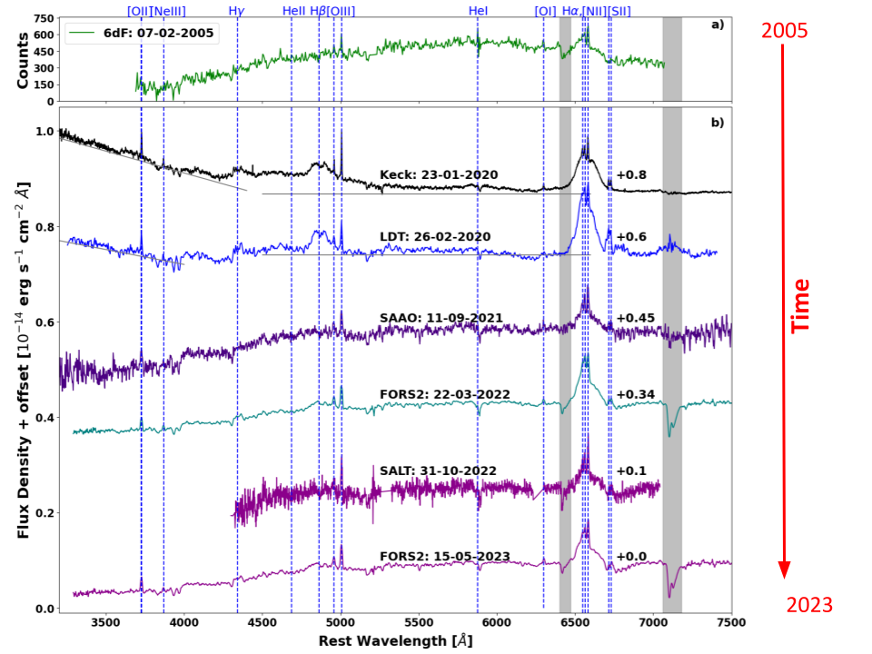
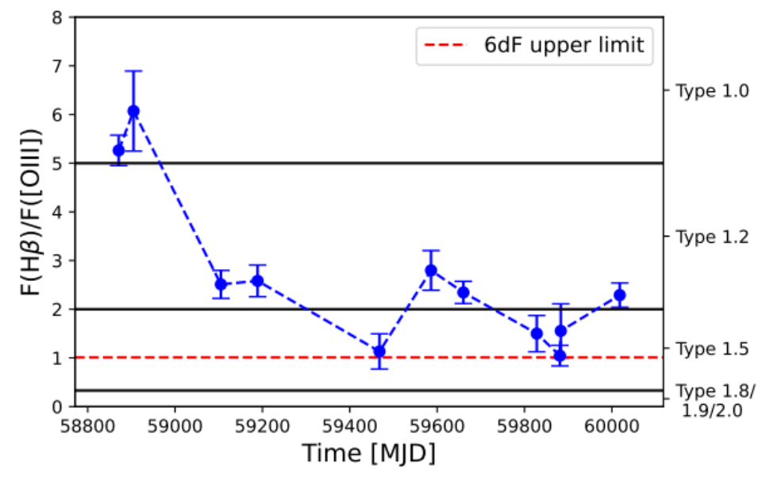
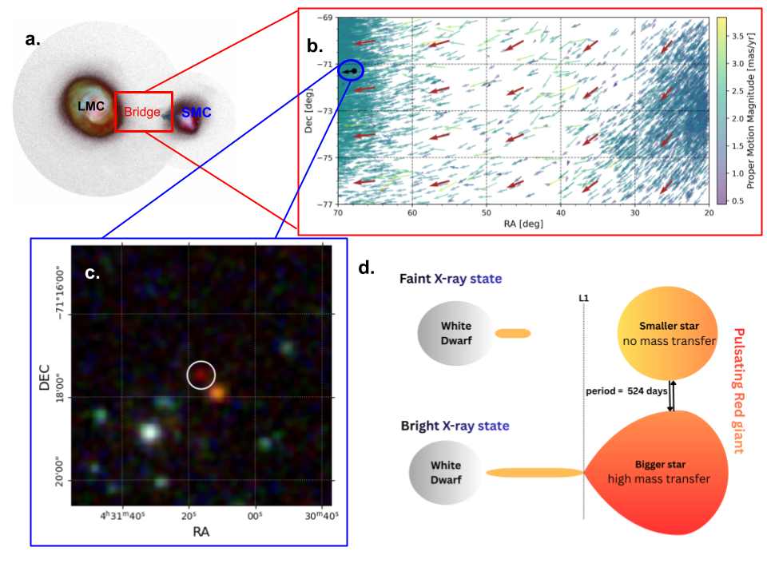

My research focuses on how matter accretes onto compact objects across a wide range of astrophysical environments. I study systems spanning from stellar-mass compact objects in X-ray binaries to supermassive black holes powering active galactic nuclei (AGN) and tidal disruption events (TDEs). Using X-ray and multiwavelength observations, I investigate the physics of accretion and the evolution of compact-object populations in nearby and distant galaxies.


A part of my research focuses on the multiwavelength study of accreting supermassive black holes, particularly transient sources such as changing-look AGNs and tidal disruption events. I also study quiescent AGNs and their spectral variability, with a focus on evolving substructures such as the accretion disk, torus, and broad-line region. I combine spectral modelling with time-domain studies to probe the geometry and physical conditions of the gas in the immediate vicinity of the black hole, including its morphology (e.g. Saha et al. 2022), temperature, ionisation structure, and the coupling between the accretion disk, corona, BLR, and torus.
I have worked closely with the Close AGN Reference Survey (CARS) and the eROSITA collaboration to investigate the long-term spectral variability of changing-look AGNs (CLAGNs), including the well-studied CLAGN Mrk 1018 (Saha et al. 2025a), which exhibits characteristics similar to those observed in flaring black hole X-ray binaries. In collaboration with the eROSITA German collaboration, I have also undertaken multiwavelength follow-up campaigns of eROSITA-detected supermassive black hole transients, including CLAGNs and tidal disruption events, using XMM-Newton, SALT, and the VLT (Saha et al. 2025b; Markowitz et al. 2026, 2024; Homan et al. 2023; Krishnan et al. 2024). These studies include short-timescale changing-look AGNs exhibiting flaring activity or intensity dips over periods of a few months, as well as tidal disruption events occurring in already active galaxies. These sources can display dramatic changes in broad emission lines, particularly the Balmer lines and He II, indicating substantial changes in their ionising continua and, in some cases, their apparent Seyfert classification e.g. Type 1 to/from Type 1.8/1.9/2 (Fig. 1). Interestingly, these transient sources exhibit a dichotomy in their characteristic variability timescales: some vary over decades, while others evolve over only a few months. A key question is whether these different timescales can be understood in terms of accretion-disk instabilities and whether similar physical processes operate across black holes of different masses.
Furthermore, I greatly enjoy working closely with students and mentoring them on a range of AGN-based projects. I focus on developing their understanding of accretion onto compact objects, radiative processes in accreting systems, advanced statistical methods, mission-specific X-ray data reduction techniques (XMM-Newton, Chandra, NuSTAR, and eROSITA), and methodologies for X-ray data analysis.

The Magellanic Clouds and the Magellanic Bridge provide a unique template for studying X-ray binary populations at known distances and sub-solar metallicities. I am a member of the eROSITA German Consortium and work closely with the Compact Objects Working group to identify and characterise the endpoints of stellar evolution - neutron stars, white dwarfs, and black holes - in binary systems using eROSITA all-sky survey (eRASS) data. I combine X-ray spectral analysis with multiwavelength observations, including optical spectroscopy, long-term optical/IR photometry, and kinematic data from Gaia, to identify and classify optical counterparts. My current work focuses on compact-object-powered X-ray sources in the Magellanic Bridge, including symbiotic X-ray binaries (Saha et al. 2026, Fig. 2), low-mass X-ray binaries, and super-soft sources. Using a continuous time-domain approach, I aim to build a more complete census of X-ray binaries in the Magellanic Bridge and use these systems to trace the history of stellar evolution in a dynamic environment shaped by the tidal interaction between the LMC and SMC. Classifying X-ray sources in crowded fields requires robust probabilistic cross-matching of X-ray catalogues with multiwavelength surveys. I develop and apply positional cross-matching pipelines and isochrone-based photometric classification methods to distinguish compact-object populations in the Local Group from background AGNs and foreground stars.
Full list on NASA/ADS.